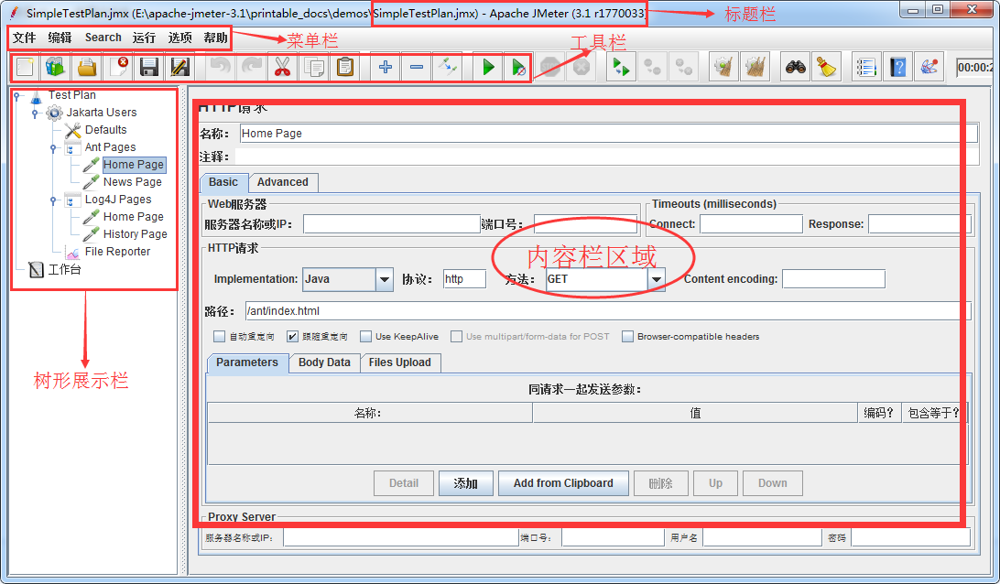
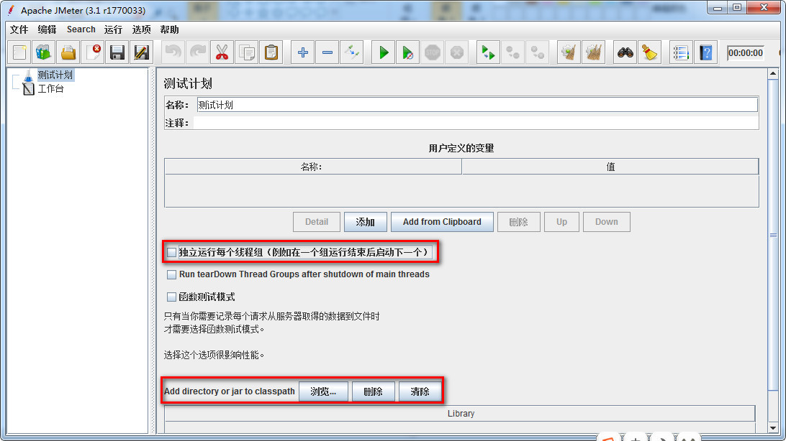
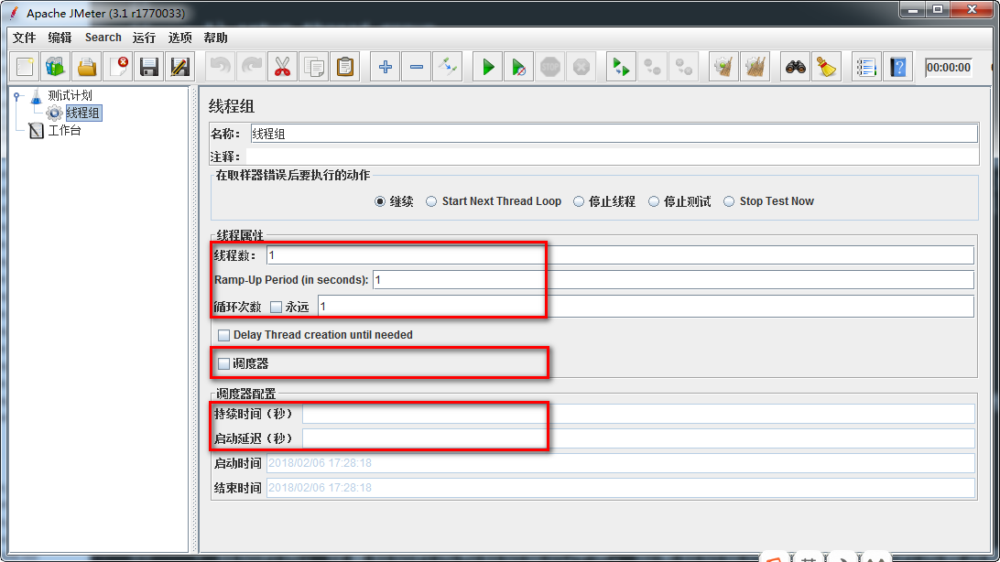
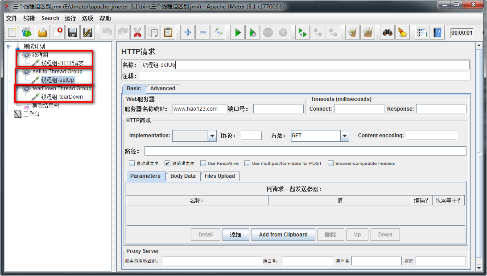
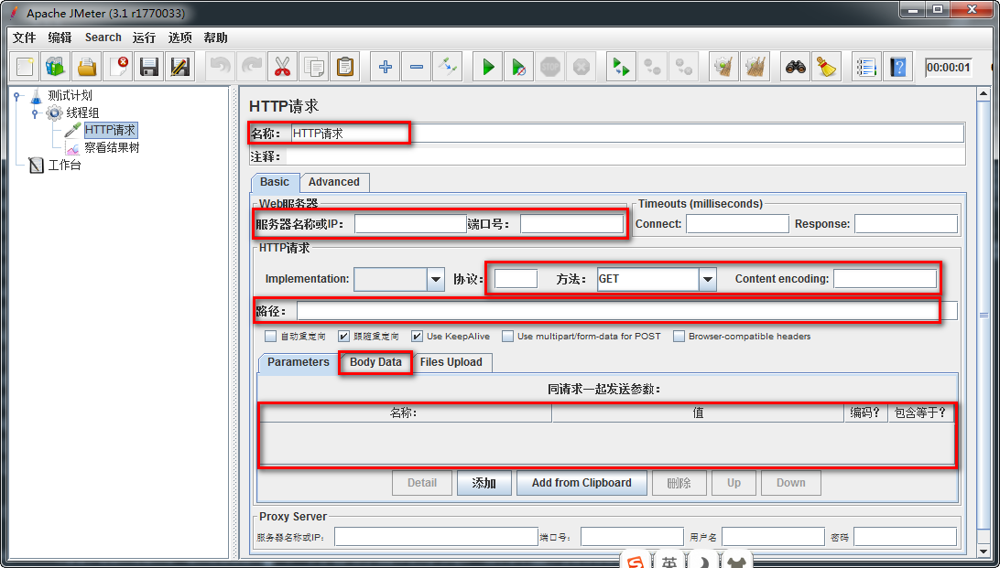
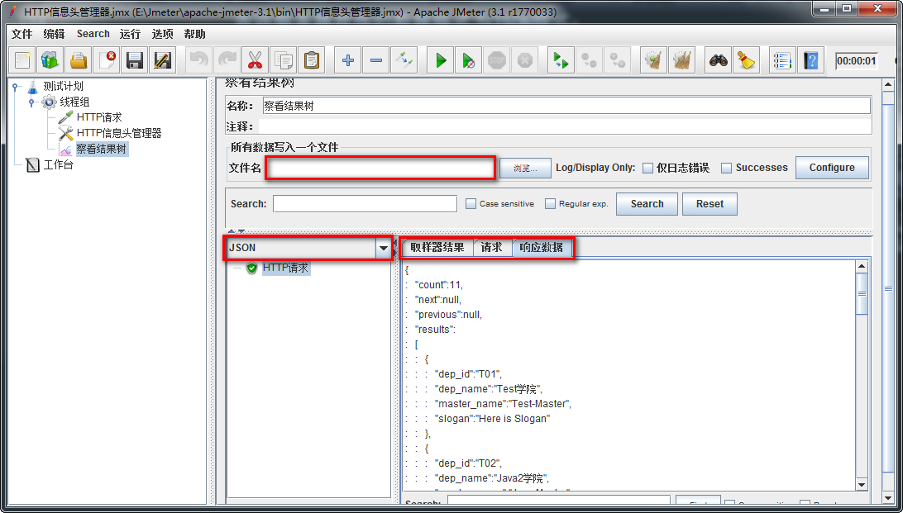

Jmeter 工具功能界面布局
目标
- 了解Jmeter功能界面布局
- 熟悉测试计划面板
1. 主界面布局
JMeter的主界面布局分为标题栏、菜单栏、工具栏、树形标签栏和内容栏
标题栏：主要显示计划信息及JMeter版本。
菜单栏：全部的功能的都包含在菜单栏中。
工具栏：工具栏中的按钮在菜单栏都可以找到，工具栏就相当于菜单栏常用功能的快捷按钮
树形标签栏：树形标签栏通常用来显示测试用例（计划）相关的标签。
内容栏：配合树形标签栏显示，树形标签中点击哪个标签，内容栏中就显示相应的内容和操作。

2.使用JMeter进行接口测试
遗留的问题：
1. 需求对我们学院查询执行100次，如何去做？
2. 50个请求同时请求如何操作？
使用JMeter的解决方案
1. 添加【**测试计划**】
2. 基于添加的测试计划添加【**线程组**】，循环次数设置为100次
3. 在【取样器】中基于线程组添加**HTTP请求**
4. 在【监听器】基于线程组添加【察看结果树】
5. 在监听器基于线程组添加【聚合报告】
3. Test Plan(测试计划)

作用：
1. 本次测试所需要的【组件】都是基于测试计划添加；
2. 本次测试所有组件的设置与执行都基于测试计划；
组件：完成指定功能代码段的封装；
选项(在这里我们只介绍我们会使用到的选项)
独立运行每个线程组：
进程：是每个正在运行的应用程序。 线程：按照进程的指令去执行指定的代码。 线程组（多线程）：多个线程的组合。 线程组（多线程）的执行顺序是并行的。 勾选：让本次测试计划中所有线程组保持从上到下顺序执行Add directory or jar to classpath：
加载第三方jar包；比如：测试数据库时使用，加载数据库驱动jar包。
4. Threads(User)线程组 【重点】
1) thread group(线程组)
2) setup thread group【特殊线程组】
3) teardown thread group【特殊线程组】
4.1 thread group(线程组)

作用:
1. 添加测试中使用的大多数组件
线程属性
- 线程数：虚拟用户数
- Ramp-Up Period(in serconds)：启动虚拟全部用户数所需要的时间
- 循环次数 ：指定次数或勾线永远
- 调度器：勾选后，调度器配置才能使用；
调度器配置
- 持续时间（秒）：设置脚本压测持续时间
- 启动延迟（秒）：启动延迟时间
提示：为了理解setup thread、teardown thread两个线程组我们结合案例理解下
4.2 案例
1. 通过thread group、setup thread group、teardown thread group 三个线程组去访问
去访问查询所有学院接口
效果图：

需求组件：
1. 基于测试计划添加【线程组】
2. 基于线程组添加【HTTP请求】
3. 基于测试计划添加【setup thread group】线程组
4. 基于setup thread group添加HTTP请求
5. 基于测试计划添加【teardown thread group】线程组
6. 基于teardown thread group添加HTTP请求
7. 基于测试计划添加【察看结果树】
组件设置细节：
1. 测试计划勾选独立运行线程组
2. HTTP请求：服务器地址 http://127.0.0.1:8000/api/departments/
3. HTTP请求: 修改HTTP请求名称，以做区分
4.3 组件详解
1. HTTP请求
2. 察看结果树
4.3 - HTTP请求

作用:
1. 模拟前端或第三方软件向服务器发送请求;
2. 设置请求时的方法和参数数据;
参数详解：
1. 名称：本属性用于标识一个取样器，建议使用一个有意义的名称。
2. 服务器名称或IP ：HTTP请求发送的目标服务器名称或IP地址。
3. 端口号：目标服务器的端口号，默认值为80 。
4. 协议：向目标服务器发送HTTP请求时的协议,可以是http或者是https ,默认值为http 。
5. 方法：发送HTTP请求的方法，可用方法包括GET、POST、PUT、DELETE。
6. Content encoding ：内容的编码方式，默认值为iso8859；一般设置【UTF-8】
7. 路径：目标URL路径（不包括服务器地址和端口）
8. 同请求一起发送参数:请求时需要传递参数，如：学院资源list查询
http://127.0.0.1:8000/api/departments/?$dep_id_list=T01,T02,T03
参数名称：【$dep_id_list】
参数值：T01,T02,T03
Body Data选项作用：
1.新增或更新时需要传递JSON报文；如学院新增是的JSON报文填写位置：
{
"data": [
{
"dep_id": "T01",
"dep_name": "Test学院",
"master_name": "Test-Master",
"slogan": "Here is Slogan"
}
]
}
2. 【注意】：新增和更新时传入报文也需要设置Content-Type:application/json
告诉服务器我传的数据格式为JSON格式；
设置地点：配置元件-->HTTP信息头管理器（用到的时候我们在讲解）
HTTP请求总结：
1. 接口完整请求地址
2. JSON报文存放地址
3. 设置默认请求数据格式
4.3 - 察看结果树

作用：
1.查看请求服务器时的请求信息;
2.查看服务器响应数据;
3.记录信息到指定文件;
说明：
1. 文件名：存放服务器响应后的状态信息； 如：e:\查询所有response.txt
2. 取样结果：服务器响应的信息头信息；比如：响应代码，响应数据大小
3. 请求：查看向服务器请求时的信息；比如：请求地址、方法、数据等
4. 响应数据：查看服务器响应的数据；比如：获取资源时，返回的JSON数据
察看结果树总结：
1. 查看请求
2. 查看响应
3. 存储请求状态信息
4.4 线程组总结：
setup thread group：一种特殊线程组，测试计划运行之前首先执行，一般做初始化操作
teardown thread group：一种特殊线程组，测试计划运行结束时运行，一般做收尾工作
thread group(线程组) ：线程组，我们测试计划中场景创建和实现都是基于此线程组
元件
概念：相同类似功能组件的集合称之为元件
1. 逻辑控制器
2. 配置元件
3. 定时器
4. 前置处理器
5. Sampler
6. 后置处理器
7. 断言
8. 监听器
元件结论：
只学重要的、常用的